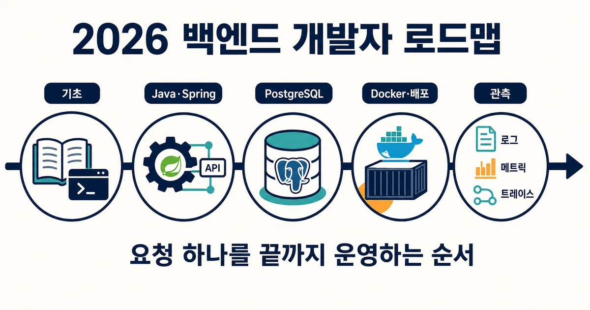
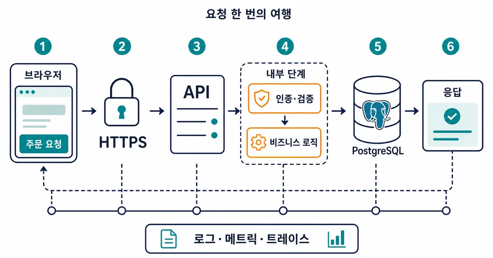
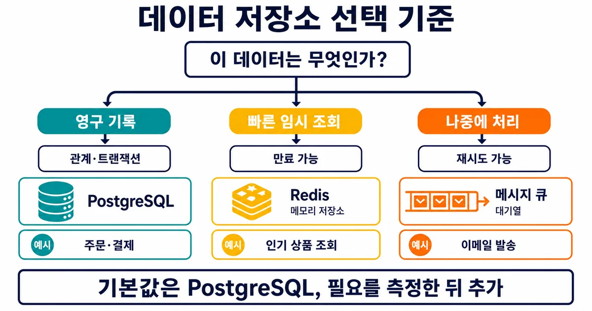
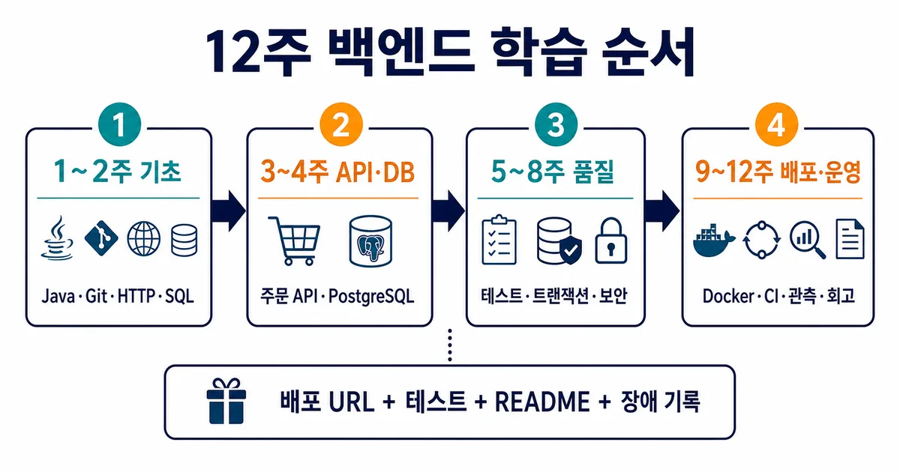

2026. 7. 21 (화) · 약 14분
백엔드 로드맵을 펼치면 언어, 프레임워크, 데이터베이스, 캐시, 메시지 큐, 클라우드가 한 화면을 가득 채운다. 전부 알아야 시작할 수 있을 것 같지만 실제 서비스는 한 번의 요청을 안전하게 받아 저장하고 응답하는 일에서 출발한다. 2026년 기준 도구는 Java 25와 Spring Boot 4, PostgreSQL 18까지 바뀌었어도 공부의 중심은 그대로다. 이 글은 기술 이름을 늘어놓는 대신 주문 API 하나를 배포하고 운영하는 순서로 길을 좁힌다.

개발 가이드
최신 기준 · 공식 문서·최신 로드맵 교차 확인 · 2026. 7. 13
2026 백엔드 개발자 로드맵: 기술 목록보다 먼저 익힐 요청 처리 흐름
Java 25와 Spring Boot 4 같은 최신 버전을 반영하되, 한 번의 요청을 저장·검증·배포·관측하는 흐름을 기준으로 공부 순서를 다시 세웠다.
1. 기술 목록보다 ‘요청 한 번의 여행’부터 본다
사용자가 주문 버튼을 누르면 브라우저는 HTTPS 요청을 보낸다. 서버는 사용자를 인증하고 입력값을 검증한 뒤 재고와 가격 규칙을 적용한다. 이어서 데이터베이스 트랜잭션으로 주문을 저장하고 상태 코드와 응답 본문을 돌려준다. 문제가 생겼을 때는 로그, 메트릭, 트레이스로 어느 구간이 느리거나 실패했는지 찾는다. 백엔드 공부는 이 경로를 한 칸씩 직접 구현하는 과정이라고 보면 방향을 잃기 어렵다.
처음부터 마이크로서비스와 Kubernetes를 배우면 요청이 실패한 이유가 코드인지 네트워크인지 배포 설정인지 구분하기 어렵다. 반면 하나의 애플리케이션과 하나의 데이터베이스로 시작하면 함수 호출, SQL, HTTP 응답의 관계가 눈에 보인다. 단일 서비스가 실제로 느려지거나 팀의 독립 배포가 필요해진 뒤에 분산 구조를 더해도 늦지 않다.

2. 1단계는 언어·Git·HTTP·SQL이다
첫 2주는 프레임워크 기능을 외우는 기간이 아니다. 변수와 함수, 클래스, 예외 처리, 컬렉션을 한 언어로 익히고 Git으로 작은 변경을 커밋한다. 터미널에서 프로세스와 포트를 확인하고, HTTP의 메서드·상태 코드·헤더·JSON을 직접 읽는다. SQL은 SELECT만 넘기지 말고 기본 키, 외래 키, UNIQUE와 NOT NULL 제약, JOIN, 트랜잭션까지 다룬다. 이 네 가지가 이후 도구를 설명하는 공통 언어다.
| 영역 | 배울 것 | 통과 기준 |
|---|---|---|
| 언어 | 함수·객체·예외·컬렉션 | 파일을 읽어 검증하고 결과를 반환한다 |
| Git | commit·branch·diff | 기능과 수정 이유가 커밋으로 남는다 |
| HTTP | 메서드·상태 코드·헤더·JSON | 요청과 응답을 개발자 도구에서 설명한다 |
| SQL | 제약·JOIN·인덱스·트랜잭션 | 중복과 잘못된 상태를 DB가 막는다 |
- 강의 한 장을 본 뒤 같은 기능을 문서만 보고 다시 만든다.
- 오류 메시지를 지우지 말고 원인·시도·해결을 README에 한 줄씩 남긴다.
- AI가 만든 코드는 입력 검증, 예외, SQL, 테스트를 직접 설명할 수 있을 때만 사용한다.
3. 백엔드 스택은 하나만 골라 3개월 유지한다
취업과 장기 서비스 운영을 겨냥한다면 Java와 Spring Boot는 여전히 좋은 출발점이다. 2026년에는 Java 25와 Spring Boot 4가 최신 축이지만, 기존 채용 환경과 라이브러리 호환성 때문에 Java 17·21과 Spring Boot 3 프로젝트도 함께 만난다. 새 프로젝트에서 최신 버전을 연습하되 버전 숫자보다 의존성 주입, 예외 처리, 트랜잭션 경계, 테스트가 어떤 문제를 푸는지 이해하는 편이 중요하다.
| 선택 | 강점 | 잘 맞는 경우 |
|---|---|---|
| Java + Spring Boot | 정적 타입·성숙한 생태계·기업 서비스 | 국내 백엔드 취업과 큰 서비스 운영 |
| TypeScript + Node.js | 프론트와 언어 공유·빠른 제품 실험 | 웹 전체 흐름을 빠르게 연결 |
| Python + FastAPI | 간결한 문법·데이터와 AI 연동 | 분석 결과를 API로 제공 |
| Go | 단순한 배포·동시성·작은 실행 파일 | 클라우드 도구와 네트워크 서비스 |
어떤 선택이든 3개월 동안 바꾸지 않는 규칙을 둔다. 언어를 옮길 때마다 라우팅과 CRUD만 반복하면 인증, 동시성, 장애 대응처럼 백엔드다운 문제까지 도달하지 못한다. 이미 Java를 공부 중이라면 그대로 Java·Spring Boot·PostgreSQL 조합으로 주문 서비스를 완성하는 편이 가장 빠르다.
- 프레임워크 강의 수보다 배포 가능한 API 하나를 우선한다.
- ORM을 쓰더라도 실제 실행 SQL과 쿼리 횟수를 확인한다.
- 라이브러리를 추가할 때 해결할 문제와 제거 방법을 함께 적는다.
4. 데이터베이스는 PostgreSQL 하나로 깊게 시작한다
처음 저장소는 관계형 데이터베이스 하나면 충분하다. PostgreSQL 18 계열이 현재 지원되는 최신 메이저 버전이지만 학습의 핵심은 버전 기능보다 모델링이다. 주문과 주문 항목을 어떤 테이블로 나눌지, 결제 금액을 어느 시점에 확정할지, 중복 주문을 어떤 제약으로 막을지 결정해야 한다. 애플리케이션의 if문만 믿지 말고 UNIQUE·CHECK·외래 키로 잘못된 상태가 저장되지 않게 만든다.

Redis는 조회가 느리다는 측정 결과가 생겼을 때 캐시로 더하고, 메시지 큐는 이메일 발송처럼 요청 응답과 분리해야 할 작업이 생겼을 때 도입한다. NoSQL도 데이터 모양과 접근 패턴이 관계형 모델에 맞지 않을 때 선택한다. ‘대규모 서비스에서 쓴다’는 이유만으로 저장소를 늘리면 정합성, 만료, 재처리, 장애 복구라는 새 문제가 동시에 생긴다.
5. 보안과 트랜잭션은 기능 완성 뒤가 아니라 기능의 일부다
로그인 성공만으로 보안이 끝나지 않는다. 인증은 누구인지 확인하는 일이고, 인가는 그 사용자가 이 주문을 읽거나 바꿀 수 있는지 판단하는 일이다. OWASP Top 10:2025의 첫 항목도 접근 제어 실패다. 모든 입력을 검증하고 비밀값을 저장소에 넣지 않으며, 의존성 업데이트와 권한 설정을 함께 관리해야 한다. 특히 ‘내 주문 조회’ API는 URL의 주문 번호만 믿지 말고 소유자 조건을 쿼리에 포함한다.
- POST 요청에는 중복 실행을 막을 idempotency key나 고유 제약을 둔다.
- 재고 감소와 주문 생성은 하나의 트랜잭션으로 묶고 실패하면 함께 되돌린다.
- 401 인증 실패와 403 권한 부족, 404 존재하지 않음을 구분한다.
- 패스워드는 검증된 해시 알고리즘으로 저장하고 로그에 토큰·개인정보를 남기지 않는다.
BEGIN;
SELECT stock FROM products WHERE id = 42 FOR UPDATE;
UPDATE products SET stock = stock - 1
WHERE id = 42 AND stock > 0;
INSERT INTO orders(user_id, product_id, quantity) VALUES (7, 42, 1);
COMMIT;위 코드는 정답 템플릿이 아니라 동시 주문을 생각하기 위한 최소 예다. UPDATE된 행 수가 0일 때 재고 부족으로 처리하는지, INSERT가 실패하면 재고 감소도 롤백되는지, 같은 요청이 두 번 들어오면 주문이 중복 생성되지 않는지 테스트해야 한다. 백엔드 포트폴리오의 깊이는 정상 화면보다 이런 실패 조건에서 드러난다.
6. 배포와 관측까지 해야 서비스가 완성된다
로컬에서만 실행되는 API는 아직 운영 경험을 보여 주지 못한다. Docker 이미지로 애플리케이션과 실행 환경을 묶고, CI에서 테스트를 통과한 커밋만 배포한다. 클라우드는 한 곳만 골라 환경 변수, 데이터베이스 연결, HTTPS, 헬스 체크, 롤백을 경험하면 된다. Kubernetes는 여러 서비스와 반복 배포를 실제로 관리할 필요가 생긴 뒤 배워도 된다. 처음에는 한 컨테이너와 관리형 PostgreSQL이 원인을 찾기 쉽다.

운영 중에는 단순히 로그를 많이 남기는 것이 아니라 질문에 답할 신호를 만든다. 요청 ID를 로그에 넣고, 응답 시간과 오류율을 메트릭으로 보고, 한 요청이 API와 데이터베이스를 지나는 시간을 트레이스로 연결한다. OpenTelemetry는 로그·메트릭·트레이스 같은 텔레메트리 데이터를 생성·수집·내보내는 공통 도구 체계를 제공한다. 장애가 나면 ‘서버가 느리다’가 아니라 어느 요청의 어느 구간이 언제부터 느렸는지 설명하는 것이 목표다.
7. 12주 계획은 매주 실행 결과를 남기는 방식으로 짠다
하루 공부량보다 매주 닫히는 결과물이 중요하다. 1~2주는 Java·Git·HTTP와 테스트 가능한 작은 함수, 3~4주는 Spring Boot 주문 CRUD와 PostgreSQL 스키마, 5~6주는 인증·검증·예외 응답·통합 테스트를 완성한다. 7~8주는 인덱스와 트랜잭션, 동시 주문을 다루고 9~10주는 Docker·CI·클라우드 배포, 11주는 로그·메트릭·트레이스와 보안 점검, 12주는 부하 테스트와 장애 회고로 마무리한다.
| 기간 | 핵심 작업 | 남겨야 할 증거 |
|---|---|---|
| 1~2주 | Java·Git·HTTP·SQL 기초 | 작은 프로그램·커밋 이력·HTTP 메모 |
| 3~4주 | 주문 CRUD와 PostgreSQL | API 명세·ERD·마이그레이션 |
| 5~8주 | 인증·테스트·트랜잭션·성능 | 실패 테스트·EXPLAIN·동시성 기록 |
| 9~12주 | Docker·CI·배포·관측 | 배포 URL·대시보드·장애 회고 |
AI 코딩 도구는 보일러플레이트, 테스트 아이디어, 문서 탐색 시간을 줄이는 데 쓰되 판단을 넘기지 않는다. 특히 인증·권한, 트랜잭션, 마이그레이션, 동시성 코드는 생성된 결과를 그대로 믿기 어렵다. 코드를 받았으면 실패 입력을 먼저 만들고 공식 문서와 실행 SQL을 확인한다. 면접에서도 ‘AI로 만들었다’보다 어떤 가정을 검증했고 어떤 오류를 고쳤는지가 설명 가능한 경험이 된다.
8. 포트폴리오는 기능 수보다 실패를 다룬 기록으로 차별화한다
할 일 목록보다 예약이나 주문 서비스가 좋은 이유는 충돌과 실패 조건이 있기 때문이다. 같은 좌석을 두 사람이 동시에 예약할 때 한 명만 성공해야 하고, 결제 요청이 재전송돼도 주문은 하나여야 한다. 관리자와 사용자의 권한이 다르고, 이메일 발송은 실패해도 주문 자체는 유지돼야 한다. 이 요구를 작은 모놀리스에서 해결하면 데이터 모델, 트랜잭션, 비동기 처리, 보안, 관측을 한 프로젝트 안에서 연결할 수 있다.
- 지금 먼저: 한 언어, HTTP, PostgreSQL, 단일 서비스, 테스트, Docker, 배포, 관측
- 측정 후 추가: Redis 캐시, 메시지 큐, 검색 엔진, NoSQL
- 문제가 생긴 뒤: 마이크로서비스, Kubernetes, 서비스 메시, 이벤트 소싱
- README 필수: 구조 선택 이유, 실행 방법, 테스트 결과, 실패 사례, 되돌리는 방법
로드맵의 다음 칸은 유행이 아니라 지금 만든 서비스가 알려 준다. 쿼리가 느리면 인덱스와 실행 계획을 보고, 반복 조회가 병목이면 캐시를 검토하며, 응답과 분리할 작업이 생기면 큐를 더한다. 이 순서로 공부하면 기술 이름을 외우는 대신 문제·증거·선택을 연결하게 되고, 새 버전이 나와도 흔들리지 않는 백엔드 기초가 남는다.
참고한 자료
좋은 백엔드 로드맵은 배운 기술의 개수가 아니라 하나의 요청을 얼마나 정확히 설명하고 고칠 수 있는지로 측정한다. 언어와 HTTP, SQL로 단일 서비스를 완성한 뒤 테스트·보안·배포·관측을 붙이면 다음 기술이 왜 필요한지도 자연스럽게 보인다. 반대로 문제가 보이기 전에 분산 시스템부터 배우면 이름은 많이 알지만 장애 원인을 좁히기 어렵다.